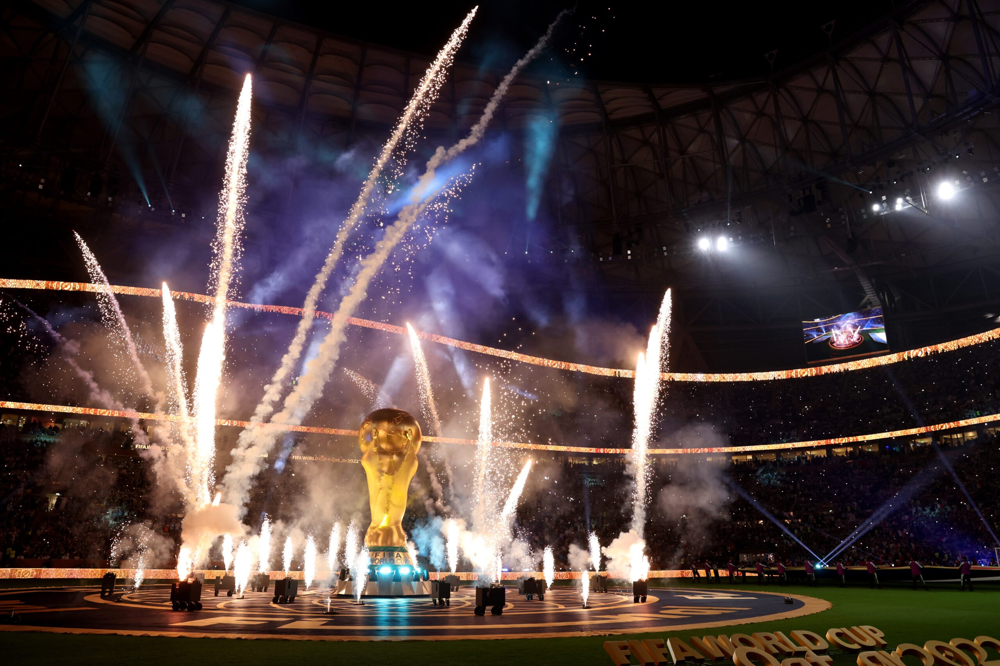

A Copa do Mundo de Futebol foi criada em 1930, no Uruguai, e é o torneio mais importante do esporte. Organizada pela FIFA, reúne seleções de diversos países em um grande evento realizado a cada quatro anos. O Uruguai foi o primeiro campeão, vencendo a Argentina na final por 4 a 2.
Com o passar das décadas, a competição cresceu e se tornou um símbolo de união e rivalidade esportiva. Grandes jogadores, como Pelé, Maradona, Zidane e Ronaldo, marcaram gerações e ajudaram a transformar a Copa em um espetáculo global, assistido por bilhões de pessoas em todo o mundo.
Atualmente, a Copa do Mundo representa muito mais do que apenas futebol: é um evento cultural, social e econômico que mobiliza nações inteiras. As sedes são escolhidas com anos de antecedência e cada edição deixa um legado de infraestrutura, emoção e histórias inesquecíveis para os torcedores.
